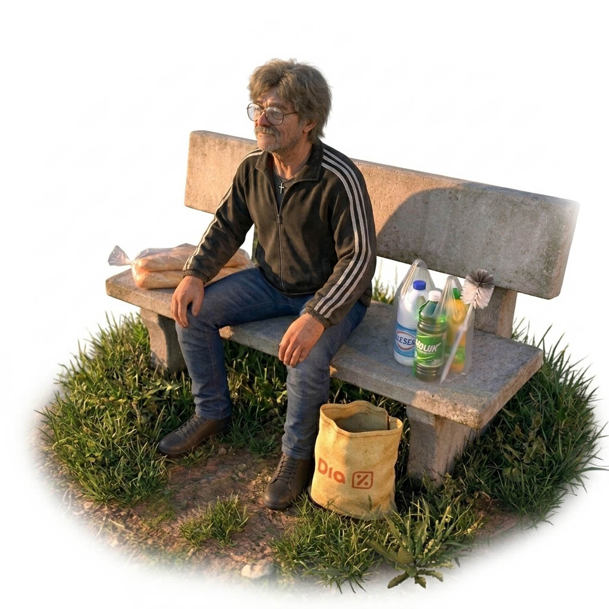
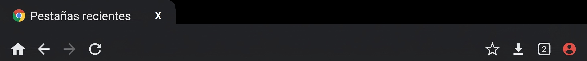

Ayuda del TV Box
Botones digitales del TV Box
Estos botones permiten controlar distintas funciones del TV Box.
 Captura de pantalla:
guarda una imagen de lo que aparece en pantalla.
Captura de pantalla:
guarda una imagen de lo que aparece en pantalla.
 Volver atrás:
regresa a la pantalla anterior.
Volver atrás:
regresa a la pantalla anterior.
 Pantalla principal:
vuelve a la pantalla principal del TV Box.
Pantalla principal:
vuelve a la pantalla principal del TV Box.
 Aplicaciones recientes:
muestra las aplicaciones abiertas para poder cerrarlas.
Aplicaciones recientes:
muestra las aplicaciones abiertas para poder cerrarlas.
 Bajar volumen:
reduce el sonido.
Bajar volumen:
reduce el sonido.
 Subir volumen:
aumenta el sonido.
Subir volumen:
aumenta el sonido.
 Apagar:
abre o activa la función de apagado del equipo.
Apagar:
abre o activa la función de apagado del equipo.
 Ocultar barra:
esconde la barra de botones para dejar más espacio
en la pantalla.
Ocultar barra:
esconde la barra de botones para dejar más espacio
en la pantalla.
¿Cómo volver a ver la barra? Si la barra desaparece, apoye el mouse en el borde inferior de la pantalla y arrástrelo desde abajo hacia arriba para volver a mostrarla.
📶 2. Cómo reconectar el Wi-Fi
Si una página no carga o internet deja de responder, puede apagar y volver a encender el Wi-Fi.
- Haga clic en el botón de Wi-Fi que está arriba a la derecha.
- Espere unos segundos con el Wi-Fi desactivado.
- Haga clic nuevamente en el botón para activarlo.
El equipo debería volver a conectarse automáticamente a la red guardada. No hace falta buscar la red ni escribir la contraseña otra vez.
🌐 3. Chrome: botones, pestañas y cómo salir
Chrome es el navegador de internet. Permite abrir páginas web, buscar información y entrar a sitios como Google y YouTube. La barra superior contiene la dirección de la página y los controles para navegar entre pestañas.

🏠 Casita: pantalla principal
Abre la página de inicio configurada en Chrome. En este equipo se configuró para mostrar esta pantalla principal.
✅ Si toca la casita y vuelve a ver esta pantalla, está funcionando correctamente.
← Flecha hacia atrás
Vuelve a la página anterior de la pestaña actual. No es lo mismo que la casita: la casita abre la pantalla principal.
⟳ Recargar
Vuelve a cargar la página actual. Puede usarlo cuando una página no termina de abrirse.
⭐ Favoritos
Permite guardar páginas para encontrarlas fácilmente más adelante.
⬇ Descargas
Muestra los archivos que descargaste desde Chrome, como imágenes o documentos.
▢ Número de pestañas
Muestra cuántas pestañas están abiertas. Haga clic para verlas, cambiar entre ellas o cerrar las que ya no necesita.
📑 Cómo cerrar una pestaña
- Presione la X o...
- Haga clic en el botón con el número de pestañas.
- Busque la pestaña que desea cerrar.
- Haga clic en la X de esa pestaña.
- Repita el procedimiento con las demás que desee cerrar.
🚪 Cómo cerrar Chrome
- Presione el botón en forma de cuadrado ubicado en la parte inferior de la pantalla para ver las aplicaciones recientes.
- Busque la aplicación de Chrome.
- Si aparece una X o una opción para cerrar, utilícela.
▶ 4. YouTube y YouTube Music
Entre a YouTube y YouTube Music desde sus páginas web, usando Chrome.
A veces, al abrir esos enlaces, Android intenta abrir una aplicación instalada en lugar de mantener la página en Chrome. Si sucede, revisá los ajustes de aplicaciones y de apertura de enlaces para ver si puede evitar que el sistema abra automáticamente la aplicación.
También puede escribir la dirección del sitio directamente en la barra de Chrome:
- YouTube: www.youtube.com
- YouTube Music: music.youtube.com
Como el navegador es antiguo, algunas funciones de las páginas actuales pueden no funcionar correctamente.
ℹ️ 5. Versiones y compatibilidad
El TV Box utiliza versiones antiguas de Android y del navegador. Algunas páginas modernas pueden tardar en cargar, mostrar errores o no ofrecer todas sus funciones.
- Android: 7.1.1
- Chrome: 101.0.4951.61
- YouTube Music: 6.42.52
Por eso, un problema con una página no significa necesariamente que el Wi-Fi esté desconectado. También puede deberse a que el sitio ya no sea totalmente compatible con este equipo.
📺 6. SmartTube
SmartTube es una aplicación de YouTube pensada para televisores y dispositivos Android TV. Tiene una interfaz adaptada a pantallas grandes y permite navegar por los videos con mayor comodidad.
Según la versión y su configuración, puede ofrecer funciones adicionales de reproducción y opciones relacionadas con los anuncios.
Recomendación: use el control remoto para navegar por los menús y seleccionar videos. También puede utilizar el mouse. Si necesita volver a otra pantalla o cerrar una aplicación, recurra a los botones digitales del TV Box.
💡 7. Consejos rápidos
- Si una página no responde, espere unos segundos antes de hacer clic nuevamente.
- Para cerrar una pestaña, use la X que aparece en esa pestaña.
- Para salir de una aplicación, use el botón cuadrado de aplicaciones recientes.
- Si internet deja de funcionar, apague y encienda el Wi-Fi siguiendo las instrucciones de esta ayuda.
- Para volver a esta pantalla principal, use el acceso correspondiente.